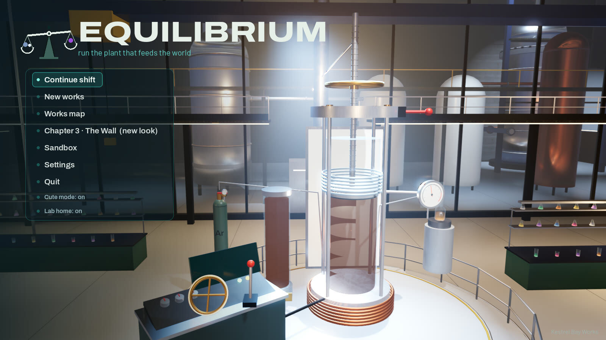
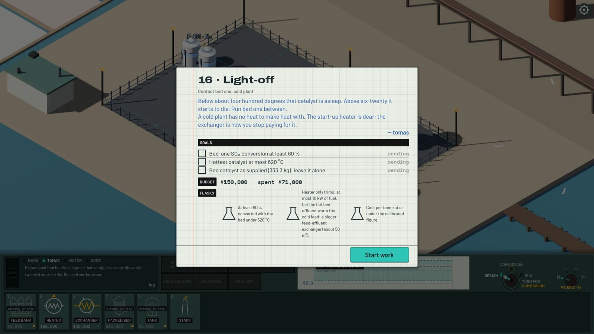

Wiki / How a job goes
How a job goes
Every job follows the same steps. Your private lab is the home screen.
- Pick a job on the Works Map. The map and the briefing lie on the drafting table in your lab.

- Read the brief. The notebook holds the setter's note, the goals with their numbers, the stars and the Call it line. A Call it is a number you predict before you commission; a right call earns a star.

- Build. Pick units from the parts rack, place them on the plot and pipe them. Each unit has a faceplate with knobs. In Engineer mode a budget is a goal too.
- Turn the key. The key goes from DESIGN to COMMISSION to RUN. The solver settles the whole plant, recycle loops included. In the new-look chapters your plant then stands in the hall.

- Read the printout. It compares your goals and your call with the engine's numbers, and names the verdict when a goal is missed. Ask Why? for the working. Stop, edit and run again; your build is kept.

The three stars
The first star is for meeting the goals. The second and third are on the job card, with their numbers, before you build. One of them is usually the Call it.
Modes
Learner has a coach and gentler events. Engineer is stricter and adds a budget. Cute mode puts molecule critters in the pipes and is on by default.
Order of jobs
The Works Map opens chapters in order. The map marks each chapter "New look" or "classic".